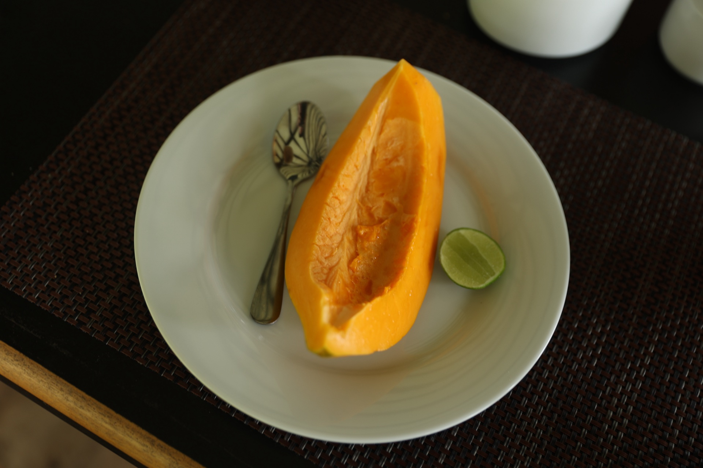

Embilipitiya · Sri Lanka
Aji's
Fruit Farm
Sleep in a fruit orchard.
Wake up to the lake.
Embilipitiya · Sri Lanka
Sleep in a fruit orchard.
Wake up to the lake.
Fifteen acres of tropical fruit — mango, banana, rambutan, dragon fruit and more. A lake at the edge of the orchard. And four private cottages that Ajith built himself, placing each one carefully so the farm stayed a farm.
This isn't a resort. There's no lobby, no pool, no package tours. What there is: clean, beautiful rooms, a family that treats you like you've always known them, and a kind of quiet that's hard to find anywhere.
Embilipitiya is not on the tourist trail. That's the point.


Ajith grew up on this land. The farm, the lake, the fruit trees — this is where he's from. He designed the cottages himself, built them with his own hands, and thought carefully about how guests could feel at home in a place that has always been his home.
He'll cook Sri Lankan meals if you ask the day before. He'll get you on a kayak, or help arrange a safari at Udawalawe. Or he'll simply leave you alone if that's what you need. He has two kids, a Rottweiler, and a warmth that guests consistently call the best thing about the stay.
Each cottage is completely separate — your own entrance, your own veranda, your own view of the lake. Raw concrete, handmade teak bed, and a bathroom open to the sky.
The cottages sit at the edge of the lake, each one surrounded by fruit trees. In the morning there's mist on the water. At night there are fireflies.
Udawalawe National Park — one of Sri Lanka's best elephant sanctuaries — is 45 minutes away. The farm is close enough to visit, far enough to feel like you've left everything behind.
Guests consistently say: they wish they'd stayed longer.

Aji has kayaks available on the lake. Early morning on the still water, with the fruit trees behind you, is something worth waking up for.

One of Sri Lanka's best national parks for elephants. A day trip from the farm — Aji can help you arrange a jeep safari.

A horse riding farm a short drive away. A different way to see the landscape of this quiet corner of Sri Lanka.
Breakfast is included. Every morning Aji's family puts out a spread — fresh fruit from the farm, eggs, tea.
If you ask the day before, they'll cook a full Sri Lankan meal. Rice and curry that guests write about long after they've left. Fresh fruit from the farm — mangos, rambutan, bananas — straight off the trees. All of it made here, by the family.
There's no restaurant nearby. You won't miss it.

"This was probably the best Airbnb we've ever stayed at. The calmness and nature are breathtaking. The highlight is the bathroom with open sky — and the fireflies by night."— Sarah & Felix, Germany
Book directly with Aji on WhatsApp — no fees, no platform.
+94 70 506 5061